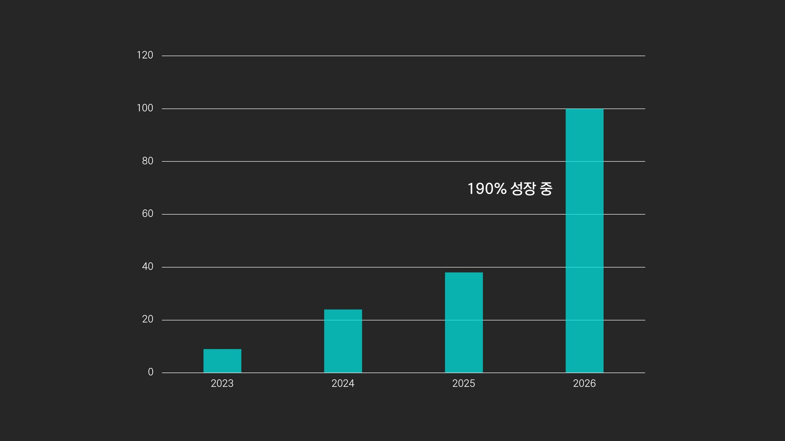
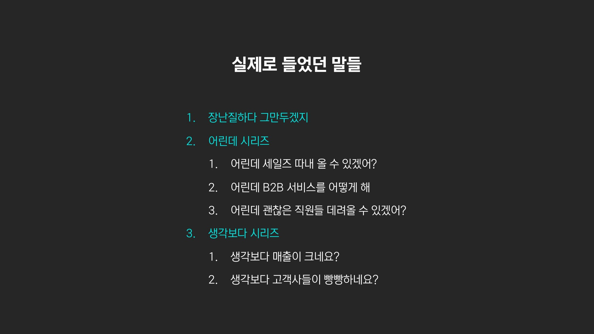

서소영 대표는 22살에 창업해, IP·굿즈 커머스 '오즈의 제작소'와 IP 매니지먼트 '유니버스존'을 운영하며 올해 연매출 100억을 바라본다. "어린데 할 수 있겠어?"라는 편견을 수천 번 들으며, 약점을 강점으로 바꿔 온 과정을 풀어놓았다.
22살에 시작한 창업, 매출 100억 회사로 성장시키기
너무 대단하시고 훌륭하신 대표님들이 많이 계신 자리에서 발표를 하게 되어서 영광입니다. 저는 주식회사 콘콘의 대표 서소영이라고 합니다. 매년 흑자를 내며 성장하고 있고요. 올해는 작년 대비 200% 가까운 성장이 예상되고, 연 매출액 100억을 목표로 하고 있습니다.
저는 22살에 창업했고요. 다양한 유명 IP사나 엔터사로부터 의뢰를 받아, 굿즈 추천부터 디자인, 제작, 포장, 배송까지 원스톱으로 진행하는 '오즈의 제작소'를 운영하고 있어요.
최근에는 잠재력이 높은 IP와 독점 계약을 맺어서, 그 IP를 키우면서 굿즈나 콜라보, 라이선스 등으로 수익화하는 '유니버스존'도 운영하고 있습니다.

어린 창업자에 대한 편견 3종 세트
저는 어린 나이에 창업을 했기에, 의심의 눈초리들로부터 계속 설득하고 증명해 나가야 했었던 일들이 좀 많았었는데요. 그랬던 일화에 대해서 이야기 드리고자 합니다.
어린데… 생각보다…
먼저 "어린데" 시리즈가 있어요. "어린데 할 수 있겠어?" 이런 얘기는 수천 번 들었었던 것 같습니다. 그리고 "생각보다" 시리즈, "생각보다 매출이 크네요", "생각보다 고객사가 되게 좋네요." 이런 말을 들으면 '생각을 어떻게 하셨을까?' 하며 속상해지는 경우도 많았어요.

그리고 "직원분들 나이가 어떻게 되는지?" 질문을 많이 받아요. 저는 회사 안에서 막내인데, 직원들이 저보다 어릴 거라고 많이들 생각하시더라고요. 그러면 "직원분들 경력이 생각보다 다들 좋으시네요" 같은 말이 나와요. 제 나이로 인해서 직원분들이 평가절하되는 것 같아서 속상할 때도 많았습니다.
대표자세요? 대리인이세요?
마지막으로는 대리인이냐고 묻는 건데요. 어떤 분은 묻지도 않고 "대리인 위임장 주세요"라고도 해요.
약점은 곧 강점: 편견을 역이용하다
예전에는 되게 속상하고 그랬었는데, 이제는 그냥 너무 당연하게 받아들여지게 됐던 것 같습니다. 이런 반응은 '편견'에서 나온 거잖아요. 편견은 사람이 살아가기 위해 빠른 의사결정을 내리기 위해서 가지게 되는 거예요. 당연히 있을 수밖에 없죠.
의심의 눈초리로부터 계속 증명하고 설득을 했어야 했기 때문에 오기가 생기게 되었고요. 그러다가 '약점은 곧 강점이다. 편견은 어쩔 수 없는 거고, 이걸 그냥 역이용해서 강점과 기회로 바꾸자'는 생각을 하게 되었습니다.
"회사 생활 안 해봤어"라는 약점은요. 안 해봐서 부족한 점도 있지만, 안 해봤으니까 오히려 고정관념이나 선입견 없이 우리만의 철학을 기반으로 조직을 만들 수 있다라는 강점으로 이용했어요.
"어리다"는 약점은요. IP나 굿즈는 1030이 메인 타깃이어서, '우리가 가장 잘 할 수 있어, 오히려 너무 좋은데?'라는 생각의 전환을 하게 되었습니다.
나 역시 편견에 빠진 게 아닌지 스스로를 반성하기
또 제가 상대적으로 어리다 보니까 경계심을 안 가지시더라고요. 그래서 중요한 정보도 편하게 말씀을 해주는 경우가 많았습니다.
진짜 순수하게 '도움이 됐으면 좋겠다'라는 생각으로 다가오시는 분도 계셨었고, 어떤 분은 조금 만만하게 보셔서 '네가 뭘 할 수 있겠어, 알려줘도 상관없겠지' 하는 느낌으로 알려주시는 분들도 계셨어요.
어느 쪽이든 '나이가 어리면 정보를 쉽게 주시는구나, 너무 좋은데? 계속 만만하게 보여야지', 이런 식으로 활용할 수 있었습니다. 꼭 나이가 아니더라도, 약점을 강점으로 활용하는 관점은 중요함을 깨달았어요. 제 삶에 있어서도 사업에 있어서도, 깊숙하게 활용하고 있습니다.
마지막으로는, 그런 경험들을 통해서 배운 게 있습니다. 저도 편견이나 고정관념, 과거의 경험으로 인한 쉽게 내리는 판단들이 있는데요. 내 편견으로 좋은 기회를 놓치고 있는 건 아닌지, 스스로를 되돌아보는 계기가 될 수 있었습니다.
들어주셔서 감사합니다.